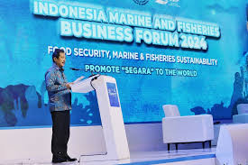
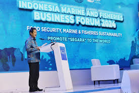

Main Content
Norwegia dan Indonesia juga aktif dalam kerja sama keamanan internasional, khususnya melalui forum-forum seperti Dewan Keamanan Perserikatan Bangsa-Bangsa (DK PBB) dan konferensi internasional lainnya. Sebagai negara yang memiliki peran penting dalam menjaga stabilitas kawasan masing-masing, kedua negara berbagi pandangan tentang pentingnya diplomasi dan solusi damai dalam menyelesaikan konflik.
Norwegia, yang dikenal dengan tradisi mediasi dalam konflik global, sering mendukung upaya Indonesia dalam mempromosikan dialog dan kerja sama regional di kawasan Asia Tenggara. Sebagai contoh, Norwegia mendukung peran Indonesia dalam upaya perdamaian di Filipina Selatan melalui keterlibatan Indonesia di perundingan damai antara pemerintah Filipina dan kelompok Moro.
Selain itu, Norwegia dan Indonesia juga bekerja sama dalam memerangi terorisme dan radikalisme global. Dalam berbagai pertemuan internasional, kedua negara mendorong pendekatan berbasis inklusi dan penguatan komunitas lokal untuk mencegah radikalisasi. Norwegia mendukung program-program pendidikan dan pelatihan di Indonesia yang bertujuan untuk membangun masyarakat yang lebih toleran dan sadar akan pentingnya perdamaian. Kolaborasi di forum keamanan internasional ini mencerminkan kesamaan nilai antara Norwegia dan Indonesia dalam mempromosikan stabilitas global, menghormati hak asasi manusia, dan mendukung pembangunan yang damai dan inklusif.